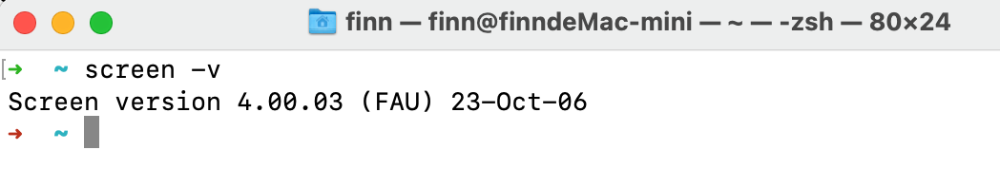

Android 11 OS¶
Android 11 OS on RK3568 User Manual
Flashing OS Image¶
Download Required Tools¶
If you want a fresh OS, you can flash your Chipsee industrial PC.
You need two tools to flash the Android 11 OS image to the RK3568 PC. The first is DriverAssistant_v5.1.1, the second is RKDevTool_v2.93, you can download all of them here.
These tools are Windows executables, please execute them on a Windows machine.
If you’ve been using a prior version of DriverAssistant, click uninstall before installing DriverAssistant_v5.1.1.


Download Prebuilt OS Images¶
If you haven’t downloaded the prebuilt OS images, you can find one here.
Start Flashing¶
After installing the DriverAssistant, you can now start to flash an OS image to the RK3568 board with RKDevTool. Double click the program to start flashing. The tool has English and Chinese language support.

STEP 1:
Connect the Type-C cable and power on the board. (If unexpected messages occur at any of the following steps, try plugging the Type-C cable again.)
Click Upgrade Firmware tab.
Click Firmware button to select a .img Android 11 image file. The screenshots show a debian11 img file is selected, but this is applicable to other OSes as well.

STEP 2:
Click Switch button to switch the device to a Loader device.

STEP 3:
You should see “Found One LOADER Device”.
Click Advanced Function tab.
Click EraseAll button.
You should see “Erasing sectors success” on the right side logs.

STEP 4:
Click Upgrade Firmware tab.
Click Upgrade button.
You should see Download Firmware progress on the right side logs.

STEP 5:
After the download firmware progress goes to 100%, the board reboots itself automatically.
After a few minutes, you should see “Found One ADB Device”.
Now your new OS is ready for use.

Connect From Workstation¶
There are 4 ways to connect to your Chipsee industrial PC from your workstation:
From Serial RS232 port
From USB Type-C port
From Ethernet
From Wi-Fi
Let’s take a look at these connecting methods one by one.
Install Android Platform Tools¶
If you intend only to use serial port RS232 to connect to Chipsee industrial PC, you can skip this part, debugging with serial port does not require installing Android Platform Tools.
If you want to control or test your Android 11 based Chipsee industrial PC from your workstation, such as your PC or laptop, one tool is required to be installed on your machine.
Since the Chipsee industrial PC runs an Android OS, like developing on any other Android devices (phones, tablets, TVs, etc), the tools and knowledge apply to developing on Chipsee industrial PC as well. We will need a tool called Android Platform Tools to be installed on your workstation. You can refer to Google Android’s official developer doc to learn how to do that, here is a link to download this tool: https://developer.android.com/tools/releases/platform-tools. If the link is dead when you’re reading this document, you can search for Android Platform Tools in your favorite search engine to find out where it has gone to. Then download and install the distribution that matches your workstation’s platform (MacOS, Linux or Windows).
Instead of Android Platform Tools, you can also get the Android Studio, it includes a SDK Manager that helps you download the SDK tools and platforms we’ll need. Android Studio is much more powerful and requires more space and time to install. If you only need the command line tool, you’re fine with just the Android Platform Tools alone.
If you have successfully installed the Android Platform Tools, you can confirm that by opening a terminal window and type a command adb, you should see multiple lines of instructions.

Type adb in Your Terminal to Confirm a Successful Installation of Android Platform Tools
Connect From Serial Port¶
In our prebuilt Android 11 OS, the RS232_2 serves as a serial debug port on the RK3568 products of all screen sizes. We can connect a RS232 cable from the Chipsee industrial PC to our workstation, allowing us to control the Chipsee industrial PC from our workstation.
To get started, except for the Chipsee industrial PC and your computer, you also need a USB to serial cable, we will use a USB Type-C to DB-9 cable as an example.
I will plug the USB Type-C port to a Mac (Windows and Linux work fine too), and then I would use three female to female dupont wires, to connect 3 of the DB-9 pins to my Chipsee industrial PC ‘s GND and RS232_2 (RX and TX) pins. Take a look at the image below, it’s a 7-inch product, if your product has a different screen size, check out the hardware document to find out which pins are RS232_2 TX and RX. You should connect the DB-9 RX to Chipsee industrial PC’s TX, and TX to RX, you should also connect their GNDs (the white wire).
{kind=link}
Connect 3 Pins with Dupont Wires
{kind=link}
Use a USB to Serial Cable to Connect the Chipsee Industrial PC with Your Workstation
For MacOS and Linux users, you will need a program called screen. It should be already installed on most MacOS and Linux distributions. Open your terminal and type screen -v. If the screen program is already installed in your computer, you should see a version number, like that in the image below:
{kind=link}
Confirm You Have the Screen Program (MacOS & Linux)
And then, let’s check what device our USB to RS232 cable in our operating system is. You should type a command in your terminal to find it out, different cables may appear as different devices in your OS:
ls /dev/tty.*
You might see many tty devices listed in your terminal, and cannot decide which is your USB to RS232 cable. Here is a tip: you can unplug the cable first, type the command to see what is listed in the OS. Then you plug it back in, and test again, to see what has recently appeared. The difference between the two should be your cable. In the image below, we found the /dev/tty.usbserial-10 is our USB to RS232 cable.

Find Out Which Device is Your USB to Serial Cable
Finally, you can put the device you found to the screen program as a parameter. To connect to your Chipsee industrial PC:
screen /dev/tty.usbserial-10 115200
There should be a few seconds of blank screen, then you might see some health checks pop up in your terminal, you can hit Enter or type some commands to see if you can interact with your Chipsee industrial PC. In the image below, the Android Chipsee industrial PC responds to my ls command.

{kind=link}
The Screen Program Connects Your Workstation to the Industrial PC’s Android Console
If you want to exit the screen program, you can press Ctrl+A then press K.
The program will ask you if you want to kill this window, then press y to exit the program.
{kind=link}
Press “Ctrl + A” Follow by a “K” to Exit the Program
For Windows users, you should install a program called PuTTY, here is a link to download the software: https://www.putty.org/. If you’re comfortable with other clients rather than PuTTY, you can use those as well. There are no hard requirements when you wish to develop on a Chipsee industrial PC. This Chipsee industrial PC is an Android device in the end, that’s also one benefit of embracing open technologies – no vendor lock-in, use your preferred developer tools.
With PuTTY in your belt, let’s find out which COM port your USB to RS232 cable is using. One tip is to check the Microsoft Windows Device Manager. Check which COM port appears/disappears when you plug/unplug the USB to serial cable. And that COM port device should be your USB to RS232 cable. When you have found the COM port your serial cable is using, let’s say it’s “your-com”, or “COM3” in this example.
Open the PuTTY program, select Session, choose Serial in the radio buttons, and fill the COM port you found previously in the Microsoft Windows Device Manager, and choose 115200 as baud rate, then click Open.

Input your-com in the Serial Line field, in our case COM3
Now you should be able to connect from your workstation to the Chipsee industrial PC through the serial port. You can try to hit Enter, or type some commands, like ls, to see if the Chipsee industrial PC replies to your commands.
Connect From USB Type-C Port¶
Apart from the serial port, you can also connect to the Chipsee industrial PC through its Type-C port. In this case, make sure you have Android Platform Tools installed on your development computer. Let’s take a look at how we can connect through USB.
For either Windows or MacOS/Linux users, firstly you need a USB Type-C cable. It can be a Type-C to Type-C, or Type-A to Type-C, at least one end needs to be Type-C, because it needs to be plugged into the Chipsee industrial PC’s Type-C port. Secondly be sure the Android Platform Tools is installed on your workstation. The image below is a 7 inch RK3568 powered Chipsee industrial PC, your product should have a Type-C port as well.
{kind=link}
Connect Your Workstation to Chipsee Industrial PC’s Type-C Port
When you plug in the USB cable properly, you can hear a sound, and see there is a pop up notification, telling you USB debugging is connected on your Chipsee industrial PC:
{kind=link}
Plugging in the USB Cable Should Trigger a Notification
USB debugging is enabled by default, if yours isn’t responding as expected, you may check whether USB debugging is set correctly on your Chipsee industrial PC, USB debugging should be enabled. Also check your USB cable to ensure your USB cable can transmit data, rather than only supports charging.
Now that the cable is connected successfully, let’s connect the two with software.
For MacOS and Linux users, you can open your terminal, and type a command:
adb devices
You should see your Chipsee industrial PC listed in the outputs, like in the image below:

4ddd66645b2b1018 is our Chipsee Android Device
And then you can connect to this device with another command:
adb shell
You might see a rk3568 followed by a dollar ($) sign, indicating you’re sending commands to the Chipsee industrial PC’s Android system in the ADB shell.

Now We Are Connected From USB Type-C Port
You can type exit or hit Ctrl + D to exit the ADB shell, to get back to your workstation’s terminal.
Connect From Wi-Fi¶
Debugging from Wifi is enabled by default. Also, please keep USB debugging enabled, even though you’re not connecting through the Type-C port. Make sure you have Android Platform Tools installed on your development computer.
To start debugging wirelessly, make sure your Chipsee industrial PC and your workstation are connected to the same Wifi network.
We will need your Chipsee industrial PC’s IP address to start connecting, you can check your Chipsee industrial PC’s IP address in Settings - Network & internet - Wi-Fi - your wifi ssid (Network details) - Advanced - IP address:

Check Your Android PC’s IP Address, in Our Case: 192.168.50.211
For MacOS and Linux users, you can then type a command to connect to your Chipsee industrial PC wirelessly in the terminal:
adb connect your-ip
In our case, “your-ip” is 192.168.50.211, yours should be a different value, maybe it starts with 172 or 10.0 or 192 etc, it depends on your office network configuration.
If connected successfully, you should see a connected to your-ip:5555 message in the terminal.
{kind=link}
Successfully Connected to Android PC
Let’s get into the adb shell by typing:
adb shell
Then you can type some commands, like ls, as shown in the image below. If you experience a lot of input lags, a poor Wifi connection might be one of the reasons, try moving to a place with better Wifi signal.

Use adb shell to Get into the Shell of Your Android PC
To exit the shell, you can either hit Ctrl + D or type exit.
If you have other problems when debugging through Wifi, you can also search for the official Android Developer documents, the Chipsee industrial PC is running a full Android operating system, other knowledge of Android development applies to this device as well.
Connect From Ethernet¶
Apart from serial port, USB cable and Wifi, connecting and debugging through Ethernet is another choice for developers.
Firstly, plug in an RJ-45 Ethernet cable, to connect your Chipsee industrial PC to the same network of your workstation. The 5 inch or 10.1 inch and above products have only one RJ-45 port. The 7 inch product has two RJ-45 ports, you can use either one.
Then you can find the IP address in Settings - About tablet - IP address. We will need this value to connect from our workstation with adb later. Let’s say it’s your-ip, in our case it is 192.168.50.83, as shown in the image below. Yours might be a different value, maybe it starts with 172 or 10.0 or 192 etc, it depends on your office network configuration.

Our IP is 192.168.50.83, Yours Might be Different
For MacOS and Linux users, open your terminal, and type a command:
adb connect your-ip
In our case, “your-ip” is 192.168.50.83:

A Successful Connection
If your connection to the Chipsee industrial PC is established, you should see connected to your-ip:5555.
Then let’s get into the adb shell by:
adb shell
You can type some commands to interact with your Chipsee industrial PC inside the shell, like ls, to check if you have successfully gotten into the Android shell.

Use adb shell to Get into the Shell of Your Android PC
To exit the shell, you can either hit Ctrl + D or type exit.
Common Issues for Connecting¶
You might encounter unexpected behaviors when you’re connecting to the Chipsee industrial PC from your workstation, here are some common issues we’ve seen.
The prompt says: “adb: more than one device/emulator”.

The Prompt Says “adb: more than one device/emulator”
When you use adb shell, and there are more than one device, the adb might be confused about which to connect. This happens when you’ve been trying to connect to the Chipsee industrial PC from more than one method. You can confirm this situation by entering adb devices, you should see more than one device listed.

More Than One Devices are Listed
In this case, you can add a -s to specify which device you want to connect.
adb -s 192.168.50.146:5555 shell
If you prefer the USB, use:
adb -d shell
Or prefer TCP/IP:
adb -e shell
You can also disconnect all devices by:
adb disconnect
And kill the adb server by:
adb kill-server
You can also shutdown the Chipsee industrial PC with adb:
adb shell reboot -p # -p means --poweroff
There are far more options you can try with adb, to learn more, you can search for “adb usages” on the Internet, or check out the official Android Developer documents. Adb is not a Chipsee vender specific tool, you can find a lot of tutorials about adb on the Internet.
Install an APK¶
To install an app from your workstation to the Chipsee industrial PC, we’ll also need the help of adb.
You should download or compile an APK file you want to install on your workstation, put it in a folder you can find, such as Downloads folder.
For MacOS and Linux users, you can open a terminal window, connect to your Chipsee industrial PC like explained in the previous chapter, but don’t get into shell.
Let’s say we have a copy of Jellyfin-Android apk in our Downloads folder:

Prepare Your APK File
Then we can type adb install path-to-file to install it to our Chipsee industrial PC’s Android system. Take care of the relative file path, you can use a absolute path as well.
adb install Downloads/jellyfin-android-v2.5.2-libre-release.apk
It might take a minute to get one app installed, you should see a success in the terminal after the installation is finished successfully.

Installation Finished After 1 Minute
You can check the Chipsee industrial PC from it’s screen, and confirm your app is installed successfully:
{kind=link}
The App We Just Installed is on our Android PC
Notice¶
(This Android 11 OS User Manual is under active development as of June 16th, 2023)